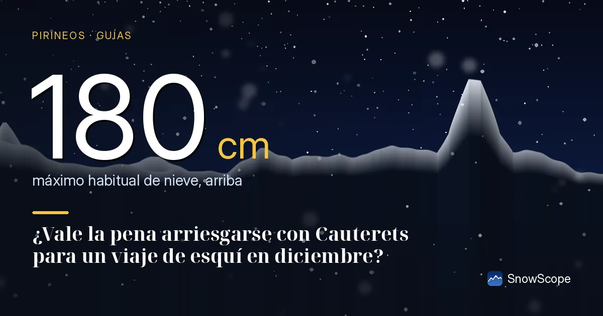

¿Vale la pena arriesgarse con Cauterets para un viaje de esquí en diciembre?
Cauterets es una opción tentadora para un viaje económico, pero la nieve a principios de diciembre suele ser escasa. Si quieres las mejores condiciones, nuestro histórico muestra que deberías esperar hasta la última semana del mes. Aunque los precios son bajos, te estás arriesgando con la cobertura natural en los Pirineos franceses.
Consulta la previsión de nieve en tiempo real de Cauterets en la app SnowScopeEspesor de nieve, alertas de nieve polvo y mapa 3D, gratis.
Primero, la respuesta sincera
Cauterets es una estación pequeña y fácil: la zona cartografiada tiene 25 km de pistas y 9 remontes, con 695 m de desnivel. Un esquiador fuerte que busca pistas nuevas cada día la conoce pronto, pero es un lugar tranquilo para recuperar las piernas.
Lo más importante que debes saber es que el remonte más bajo comienza a 1725 m. Esto es bastante alto para los Pirineos, lo cual ayuda cuando hace calor. Sin embargo, la profundidad habitual en diciembre a esta cota base es de solo 23 cm. En un invierno pobre, como en 1989-90, ese espesor puede bajar hasta los 2 cm, lo que hace imposible esquiar en la parte baja.

Principios frente a finales de diciembre en números
El momento de tu viaje lo cambia todo en Cauterets. En la primera semana, del 1 al 7 de diciembre, la base a 1725 m tiene 30 cm de nieve solo en el 28 % de los inviernos pasados. Si vas durante la semana del 15 al 21 de diciembre, esa probabilidad se mantiene en el 37 %. Es una espera nerviosa para que llegue la nieve.
Los números se ven mucho mejor si reservas para el final del mes. Del 22 al 28 de diciembre, la probabilidad de tener 30 cm o más en la base sube al 54 %. En la parte alta de los remontes, que llega a 2420 m, la probabilidad de tener 30 cm de cobertura es del 72 % durante esa misma última semana. La profundidad habitual el 15 de diciembre en la cima es de 34 cm, así que cuanto más alto te alojes, más seguro será tu viaje.
Cuánto cuesta el forfait
Una cosa que no ha cambiado es que Cauterets sigue siendo muy asequible para unas vacaciones de invierno. Un pase de adulto de 1 día cuesta 46 EUR, un precio justo por 25 km de pistas señalizadas. Si te quedas una semana completa, el pase de adulto de 6 días cuesta 276 EUR. Estos precios hacen que sea mucho más fácil volver a practicar este deporte sin gastar una fortuna.
Hoy es 13 de noviembre de 2026 y la montaña está esperando el invierno. Hay 0 cm de nieve en la base y en las cotas medias. La parte alta de los remontes a 2420 m también tiene 0 cm, pero la previsión muestra 8 cm de nieve nueva en los próximos 7 días. Entre el 13 de noviembre y el 26 de noviembre, las perspectivas para dos semanas en la zona media y superior muestran un rango de 9 cm a 39 cm, así que la temporada empieza a despertar.
¿Cauterets o Grand Tourmalet?
Al comparar Cauterets con Grand Tourmalet, tienes que elegir entre tamaño y altura. Grand Tourmalet es mucho más grande, con 54 km de pistas y 29 remontes. También cuesta más, con un pase de adulto de 1 día a 55 EUR y un pase de 6 días a 294 EUR. Sin embargo, más grande no siempre es mejor en un diciembre habitual.
El remonte más bajo en Grand Tourmalet está a 1459 m, mucho más bajo que la base de 1725 m de Cauterets. Por esto, la profundidad habitual de diciembre en la base de Grand Tourmalet es de solo 15 cm. Incluso en la cima, Cauterets suele tener más nieve, con 42 cm frente a los 36 cm en la cima de Grand Tourmalet. Para un viaje en diciembre, la base más alta de Cauterets es una apuesta más segura.
¿Ha empeorado diciembre?
Nuestro histórico de nieve de 46 inviernos pasados muestra una tendencia clara que no podemos ignorar. En los primeros 15 inviernos, desde 1980-81 hasta 1994-95, la parte media de la montaña a 2072 m tenía una media en diciembre de 35 cm. En los últimos 15 inviernos, desde 2011-12 hasta 2025-26, esa media ha bajado a 23 cm.
El invierno pasado, en 2025-26, la media de diciembre en la base fue de solo 17 cm. Aunque el pico habitual de la temporada en la cima puede alcanzar los 180 cm, esto suele ocurrir mucho después de diciembre. En un invierno habitual, la primera nieve duradera llega a la cima el 1 de noviembre y a la base el 4 de noviembre. Es un comienzo lento, así que ser honesto con los números es la única forma de planificar un buen viaje.
Consejos para esquiadores
- Reserva tu viaje para la semana del 22 al 28 de diciembre, cuando la probabilidad de tener 50 cm en la cima es del 59 %.
- Quédate en las pistas cercanas a la cima de los remontes a 2420 m, donde la nieve suele tener 42 cm de profundidad en diciembre.
- Elige Cauterets antes que Grand Tourmalet si quieres un pase diario más barato de 46 EUR y una zona base más alta.
- Consulta el boletín de aludes antes de pensar en salir de los 25 km de pistas señalizadas.
- Busca el pase de 6 días de 276 EUR en la web oficial para que tu viaje sea de bajo coste.
Más mapas (sitios externos)
Referencias y créditos
- N'PY, Cauterets official ski pass prices 2026-27 www.n-py.com/fr/cauterets/forfaits-ski
- N'PY, Grand Tourmalet official ski pass prices 2026-27 www.n-py.com/fr/grand-tourmalet/forfaits-ski
- SnowScope, December snow at three heights and today's snow map snowscope.app/
Sobre estas cifras
Cifras de nieve: histórico de nieve de SnowScope, 46 inviernos pasados (1980-81 a 2025-26) a tres alturas de cada estación (un modelo del pasado corregido por altitud: una estimación para una zona, no mediciones de la estación); cifras de diciembre calculadas con los espesores diarios de esos inviernos. Nieve actual y tendencia a dos semanas: previsiones de SnowScope (tendencia de ECMWF y GFS, un rango, no una promesa). Remontes y pistas: cartografía de OpenSkiMap. Precios: las páginas oficiales de abajo, consultadas el 2026-11-13; los precios pueden cambiar, compruébalos antes de reservar.
Boletines oficiales de aludes: Météo-France – Bulletin d'estimation du risque d'avalanche
Citar este informe
Para investigación, docencia o prensa: cifras y gráficos reutilizables libremente bajo CC BY 4.0 con esta cita.
SnowScope (2026), ¿Vale la pena arriesgarse con Cauterets para un viaje de esquí en diciembre?, https://snowscope.app/blog/es/2026/11/cauterets-december-ski-honest-snow-odds-2026.html, consultado el 2026-11-14
SnowScope (Atlas Labs). (2026, November 14). ¿Vale la pena arriesgarse con Cauterets para un viaje de esquí en diciembre?. SnowScope snow reports. https://snowscope.app/blog/es/2026/11/cauterets-december-ski-honest-snow-odds-2026.html
BibTeX
@misc{snowscope2026cauteretsdecemberskihone,
author = {{SnowScope (Atlas Labs)}},
title = {¿Vale la pena arriesgarse con Cauterets para un viaje de esquí en diciembre?},
year = {2026},
month = nov,
howpublished = {\url{https://snowscope.app/blog/es/2026/11/cauterets-december-ski-honest-snow-odds-2026.html}},
note = {Published 2026-11-14 17:41 UTC; accessed 2026-11-14}
}· CC BY 4.0 · Métodos, datos y herramientas →
Cauterets: nieve y temperatura según la altura, este invierno vs el pasado (herramientas) →
Sigue Cauterets
Gratis: un aviso cuando llega la nieve y la previsión cada mañana.